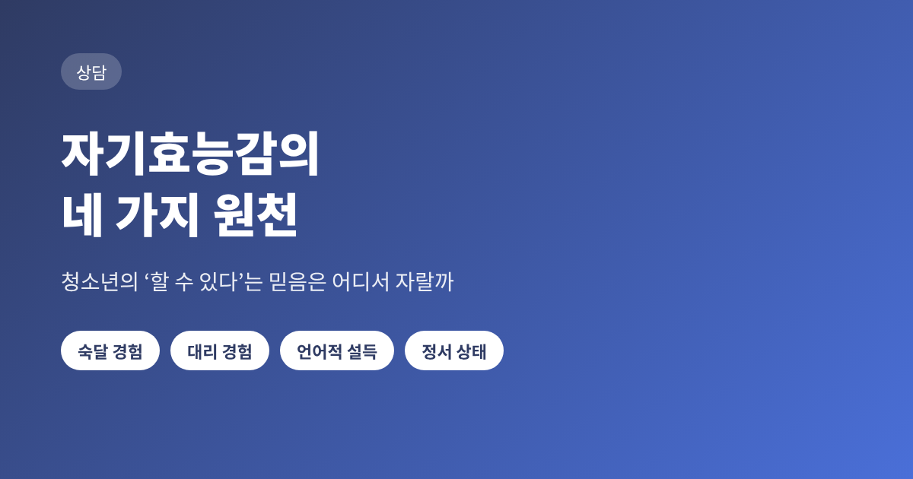
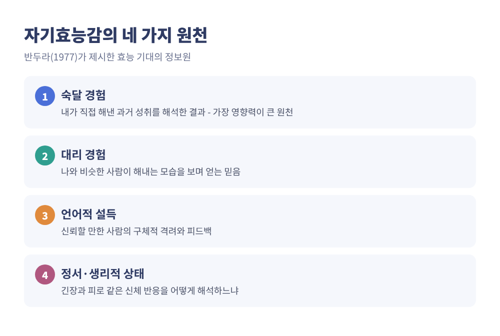
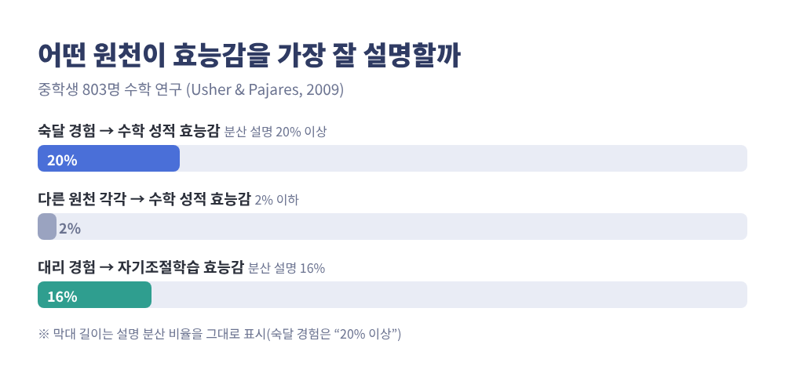
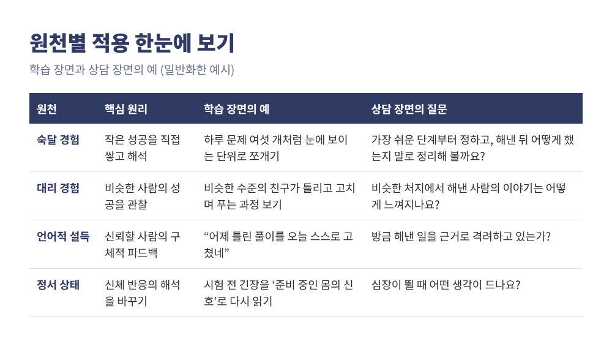
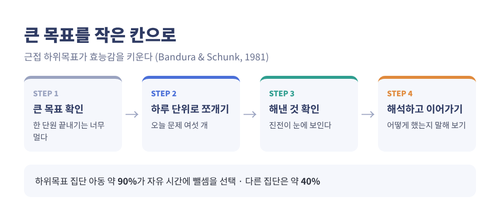
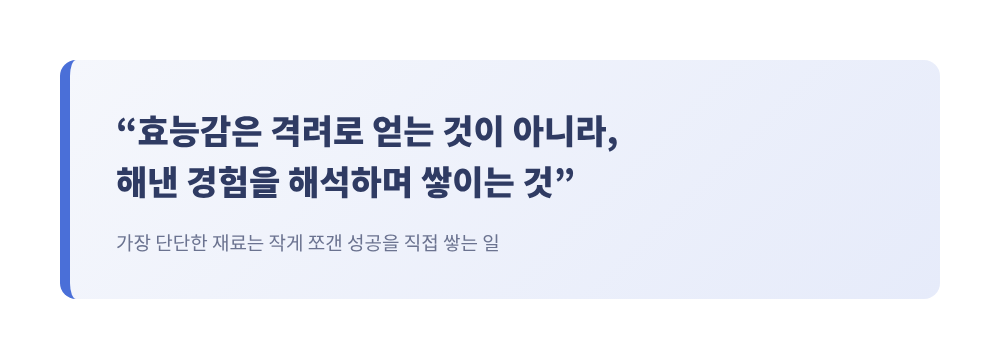

자기효능감의 네 가지 원천 — 청소년의 '할 수 있다'는 믿음은 어디서 자랄까

이번 글에서는 반두라의 자기효능감 이론과, 그 믿음이 만들어지는 네 가지 원천을 정리해 보겠습니다.
숙달 경험, 대리 경험, 언어적 설득, 정서 상태가 그 네 가지입니다.
청소년의 학습 장면과 상담 장면에서 각각 어떻게 쓸 수 있는지까지 함께 살펴봅니다.

자기효능감이란 무엇인가
자기효능감은 앞으로 닥칠 상황에서 필요한 행동을 자신이 해낼 수 있다는 판단입니다.
반두라가 1977년 논문에서 이 개념을 내놓았습니다.
여기서 구분할 것이 하나 있습니다. '이 행동을 하면 좋은 결과가 나온다'는 믿음과, '나는 그 행동을 해낼 수 있다'는 믿음은 다릅니다.
앞의 것은 결과 기대이고, 뒤의 것이 자기효능감입니다.
공부하면 성적이 오른다는 것을 알아도, 자신이 끝까지 해낼 수 있다고 믿지 못하면 책상 앞에 앉기 어렵습니다.
반두라의 1977년 논문 초록에 따르면 이 믿음은 세 가지를 좌우합니다.
대처 행동을 시작할지, 얼마나 노력을 쏟을지, 장애물 앞에서 얼마나 버틸지입니다.
효능감이 높은 사람은 어려운 과제를 정복할 대상으로 보고, 낮은 사람은 피하려는 경향이 있다고 정리됩니다.
낮은 효능감은 부족한 점에 대한 반추, 높은 스트레스와도 연결됩니다.
믿음은 어디서 오는가: 네 가지 정보원
반두라는 효능감이 막연한 기분이 아니라, 경험에서 얻는 정보를 해석한 결과라고 보았습니다.
그 정보원이 네 가지입니다. 어느 원천이 더 믿을 만한지, 그리고 본인이 그 정보를 어떻게 해석하는지에 따라 효능감의 변화 폭이 달라집니다.

첫째, 숙달 경험
가장 영향력이 큰 원천으로 여러 문헌이 일치합니다.
자신의 과거 성취를 해석한 결과이기 때문입니다.
미국 남동부의 한 공립 중학교 6~8학년 803명을 대상으로 한 우셔와 파자레스(2009)의 연구가 이를 보여줍니다.
숙달 경험은 수학 성적 효능감과 수학 기능 효능감 분산의 20% 이상을 설명했습니다.
다른 세 원천은 각각 2% 이하였습니다.
핵심은 '성공의 크기'가 아니라 '성공의 설계'입니다.
반두라와 슝크(1981)는 산술에 큰 어려움이 있고 수학에 흥미가 낮은 7~10세 아동 40명에게 서로 다른 목표를 주었습니다.
한 회기에 6쪽씩 끝낸다는 가까운 하위목표를 받은 아이들은 효능감이 가장 크게 올랐고, 뺄셈 실력도 가장 많이 늘었습니다.
42쪽을 7회기 안에 끝내라는 먼 목표를 받은 아이들은 효능감이 중간까지 올랐다가 소폭 내려갔습니다.
자유 시간에 뺄셈 문제를 골라 푼 아이는 하위목표 집단에서 약 90%, 다른 집단에서 약 40%였습니다.
예전엔 '큰 목표를 세우고 버티라'고 말했다면, 이 연구는 '눈에 보이는 작은 칸으로 나누라'고 말합니다.
주의할 점도 있습니다. 반복된 실패는 믿음을 약화시킵니다.
다만 실패를 바꿀 수 있는 노력이나 전략 탓으로 돌리면 효능감이 보호된다고 알려져 있습니다.
둘째, 대리 경험
나와 비슷한 사람이 해내는 모습을 보면 '나도 할 수 있겠다'는 생각이 듭니다.
모델이 나와 비슷할수록, 그리고 성공한 모델이 여럿일수록 효과가 큽니다.
흥미로운 대목은 모델의 종류입니다.
슝크와 파자레스(2001)의 정리에 따르면, 처음부터 완벽한 숙달 모델보다 처음에는 서툴지만 성실히 전략을 적용하며 나아지는 대처 모델이 학습 초기에 효능감을 더 높이는 경향이 있습니다.
학습에 어려움이 있는 학생일수록 그렇습니다. 대처 모델을 자기와 더 비슷하게 보기 때문입니다.
우셔와 파자레스(2009)에서도 대리 경험은 자기조절학습 효능감 분산의 16%를 설명하는 가장 강한 예측변수였습니다.
셋째, 언어적 설득
격려와 피드백이 믿음을 키울 수 있습니다. 그러나 이 원천은 단독으로는 가장 약한 편이고, 다른 원천과 결합할 때 힘이 커집니다.
말하는 사람의 신뢰성과 전문성에 따라서도 무게가 달라집니다.
구체적으로 쓰는 법은 이렇습니다.
과거 수행과 연결된 구체적 피드백이 막연한 칭찬보다 낫습니다.
"넌 똑똑하니까 이건 쉬울 거야" 같은 말은 고정된 특성에 초점을 두기 때문에 좋은 예가 아닙니다.
지금 실력에 비해 지나치게 어려운 과제로 설득하면 오히려 역효과가 날 수 있습니다.
피드백의 내용도 시기에 따라 달라집니다. 슝크와 파자레스(2001)에 따르면 학습 초기에는 "열심히 해서 맞혔구나" 같은 노력 피드백이 가장 믿을 만합니다.
기술이 늘면 능력 피드백이 더 믿을 만해지고 효능감에도 더 큰 영향을 줍니다.
넷째, 정서·생리적 상태
시험 전 심장이 뛰는 것은 누구에게나 있는 일입니다.
효능감을 좌우하는 것은 그 반응 자체보다 해석입니다. 같은 두근거림을 '내가 약하다는 신호'로 읽으면 효능감이 낮아지고, '준비가 되었다는 신호'로 읽으면 도움이 됩니다.
우셔와 파자레스(2009)는 매일 특정 수업에 갈 때 느끼는 불안과 피로가 능력의 신호로 해석되는 사례를 소개합니다.
이 연구에서 생리적 상태는 자기조절학습 효능감과 곡선 관계를 보였습니다. 직선처럼 단순하지 않다는 뜻입니다.
이완, 스트레스 관리, 수면, 운동, 영양이 긍정적 해석을 돕는 방법으로 언급됩니다.

청소년 학습 장면에서의 활용
아래는 특정 인물이 아닌, 일반화한 사례입니다.
수학 시간만 되면 손을 놓는 중학생이 있다고 해 보겠습니다.
이 학생에게 '이번 달 안에 한 단원 끝내기'는 너무 멉니다. 하루에 문제 여섯 개처럼 눈에 보이는 칸으로 쪼개야 합니다. 숙달 경험의 설계입니다.
비슷한 수준의 친구가 같은 유형의 문제를 풀어 가는 과정을 옆에서 보는 것은 대리 경험입니다.
틀리고 고치는 모습까지 보이는 모델이 더 도움이 될 수 있습니다.
피드백은 "머리가 좋다"보다 "어제 틀린 풀이를 오늘 스스로 고쳤네"가 낫습니다.
시험 직전의 긴장은 '준비하고 있다는 몸의 신호'로 다시 읽도록 돕는 방법이 있습니다.

상담 장면에서의 활용
상담에서도 원리는 같습니다. 아래 역시 일반화한 사례입니다.
사람 앞에서 발표하는 일이 두려워 피하게 된다는 청소년이 있다고 합시다.
반두라의 1977년 논문 초록은, 두렵지만 실제로는 안전한 활동에 반복해서 직면하며 숙달을 쌓으면 효능감이 강해지고 방어 행동이 줄어든다고 설명합니다.
그래서 상담자는 가장 쉬운 단계부터 함께 정하고, 해낸 경험을 같이 되짚습니다.
"무엇을 해냈는지, 그때 어떻게 했는지"를 말로 정리하게 하는 것이 경험을 '해석'으로 바꾸는 과정입니다.
여기서 유의할 점이 있습니다. 상담자의 격려는 신뢰가 쌓인 뒤에야 힘을 가집니다.
아직 해 보지 못한 일을 "넌 충분히 할 수 있어"라고만 말하는 것은 효과가 약할 수 있습니다.
방금 해낸 작은 성공과 연결해 말할 때 설득력이 생깁니다.
알아 두면 좋은 한계
효능감 이론이 만능은 아닙니다. 몇 가지는 솔직히 말씀드려야 합니다.
첫째, 인과 방향입니다. 많은 연구가 상관 연구여서 효능감과 수행이 서로를 강화할 수 있습니다.
탈사마 등(2018)의 종단 연구 11편 메타분석(약 2,700명)에서는 이전 수행이 이후 효능감을 예측하는 힘이 그 반대보다 컸습니다. 믿음만 키운다고 성과가 따라오지는 않는다는 의미입니다.
둘째, 과신입니다. 능력을 크게 넘는 효능감은 준비 부족을 부를 수 있습니다. 반두라는 효능감이 현재 능력을 약간 웃돌 때 가장 쓸모 있다고 언급했습니다.
셋째, 문화와 개인차입니다. 이론은 서구 개인주의 전통에서 나왔고, 원천의 영향력은 성별, 학업 능력, 학문 영역에 따라 다를 수 있습니다.
또 메타분석(후앙, 2013)에서 학업 효능감의 성별 차이는 작았고(효과크기 0.08), 영역에 따라 방향이 달랐습니다. 언어는 여학생, 수학은 남학생이 더 높았습니다. 어느 한쪽이 '원래' 약하다는 식의 일반화는 피해야 합니다.

정리하면 이렇습니다.
자기효능감은 타고난 성격이 아니라, 숙달 경험, 대리 경험, 언어적 설득, 정서 상태라는 네 가지 정보를 어떻게 해석하느냐로 자라는 믿음입니다.
그중 가장 단단한 재료는 작게 쪼갠 성공을 직접 쌓는 일이었습니다.
아이에게 필요한 것은 거창한 응원보다 오늘 해낼 수 있는 여섯 쪽의 분량일지 모릅니다.
이 글은 일반적인 정보 제공을 목적으로 하며, 진단이나 치료를 대신하지 않습니다.
무기력, 불안, 학습 회피가 오래 이어져 일상에 지장이 있다면 혼자 해결하려 하지 마시고 학교의 Wee 클래스나 청소년 상담복지센터, 전문 상담사와 상의해 보시길 권합니다.